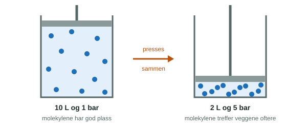

Gasser: trykk, volum og temperatur
I et anlegg finner du gass i trykkluftnett, gassflasker, kompressorer og varmepumper. Trykk, volum og temperatur i en gass henger sammen. Endrer du én av dem, endres de andre. Det må du vite for å forstå utstyret og for å jobbe trygt.
Denne siden bruker trykk (særlig absolutt trykk) og temperatur fra grunnbegrepene.
Gasser kan presses sammen
I en gass er det stor avstand mellom molekylene, og de farer rundt i alle retninger. Når de treffer veggen i beholderen, dytter de på den. Det er dette som er trykket i gassen.
Fordi det er så mye tomrom mellom molekylene, kan en gass presses sammen. Det kalles kompresjon. En væske kan nesten ikke presses sammen, fordi molekylene allerede ligger tett.
- Bruk absolutt trykk. En trykkmåler viser vanligvis overtrykk. Legg til lufttrykket, ca. 1 bar.
- Bruk temperatur i kelvin: \( T = t + 273 \), der \( t \) er temperaturen i °C. Eksempel: 20 °C = 293 K.
Formlene gjelder for en fast mengde gass, der ingen gass slipper inn eller ut. De er en forenklet modell. Ved vanlige trykk stemmer de godt, men ved svært høye trykk, som i en gassflaske, gir de bare omtrent riktige svar.
Trykk og volum
Når temperaturen er den samme hele tiden, gjelder dette: presser du gassen sammen til halvt volum, blir trykket dobbelt så stort. Molekylene har mindre plass og treffer veggene oftere.
\[ p_1 \cdot V_1 = p_2 \cdot V_2 \]
Tallet 1 står for før, og 2 står for etter. Sammenhengen kalles Boyles lov.

Oppgave: En kompressor suger inn 10 L luft ved 1,0 bar (absolutt trykk) og presser den sammen til 2,0 L. Temperaturen blir den samme som før. Hva blir trykket?
- Det vi vet: \( p_1 = 1{,}0 \text{ bar} \), \( V_1 = 10 \text{ L} \), \( V_2 = 2{,}0 \text{ L} \).
- Snu formelen: \( p_2 = \dfrac{p_1 \cdot V_1}{V_2} \)
- Sett inn: \( p_2 = \dfrac{1{,}0 \text{ bar} \cdot 10 \text{ L}}{2{,}0 \text{ L}} = 5{,}0 \text{ bar} \)
Svar: Trykket blir 5,0 bar absolutt trykk. En trykkmåler viser ca. 4 bar, fordi den viser overtrykket.
Trykk og temperatur
I en lukket beholder kan ikke gassen utvide seg. Varmer du den opp, beveger molekylene seg raskere og treffer veggene hardere og oftere. Da stiger trykket.
\[ \frac{p_1}{T_1} = \frac{p_2}{T_2} \]
Dobler du temperaturen i kelvin, dobles trykket. Sammenhengen kalles Gay-Lussacs lov.
Oppgave: En gassflaske har et absolutt trykk på 200 bar ved 15 °C. Den blir stående i sola og blir 50 °C. Hva blir trykket?
- Gjør om til kelvin: \( T_1 = 15 + 273 = 288 \text{ K} \) og \( T_2 = 50 + 273 = 323 \text{ K} \).
- Snu formelen: \( p_2 = p_1 \cdot \dfrac{T_2}{T_1} \)
- Sett inn: \( p_2 = 200 \text{ bar} \cdot \dfrac{323 \text{ K}}{288 \text{ K}} = 224 \text{ bar} \)
Svar: Trykket stiger til ca. 224 bar. Derfor skal gassflasker ikke stå i sola eller nær varmekilder.
Hadde du brukt °C, ville du fått 200 · 50/15 = 667 bar. Det er feil. Bruk alltid kelvin.
Volum og temperatur
Kan gassen utvide seg fritt, for eksempel luft som varmes i et tørkeanlegg, eller luft i en ballong, holder trykket seg likt. Da øker i stedet volumet når gassen varmes opp:
\[ \frac{V_1}{T_1} = \frac{V_2}{T_2} \]
Sammenhengen kalles Charles' lov. Eksempel: 1,0 m3 luft som varmes fra 20 °C (293 K) til 80 °C (353 K), blir til \( 1{,}0 \text{ m}^3 \cdot \dfrac{353}{293} = 1{,}2 \text{ m}^3 \). Varm luft tar mer plass. Det må vifter og kanaler i et tørkeanlegg være laget for.
Boyles lov, Gay-Lussacs lov og Charles' lov kalles sammen for gasslover.
Når gass presses sammen, blir den varm
I eksempelet med trykkluft antok vi at temperaturen ikke endret seg. I virkeligheten blir gassen varm når den presses sammen, fordi kompressoren gjør et arbeid på den. Du kjenner det på en sykkelpumpe. Derfor har store kompressorer kjøling. Det samme prinsippet bruker varmepumpen, som du lærer om på siden Varmepumpe og COP.
- Gassflasker skal stå sikret mot å velte, og de skal ikke stå i sola eller nær varmekilder. Trykket stiger når flasken blir varm.
- Rett aldri trykkluft mot kroppen eller mot andre. Trykkluft kan presse luft inn gjennom huden og gi alvorlige skader.
- Trykkavlast utstyr før du åpner en kobling, en flens eller et lokk. Gass under trykk kan slynge ut deler med stor kraft.
Test deg selv
1. Hvorfor kan en gass presses sammen, mens en væske nesten ikke kan det?
- Fordi gassmolekyler er mindre enn væskemolekyler.
- Fordi det er stor avstand mellom molekylene i en gass.
- Fordi gasser alltid er varmere enn væsker.
I en gass er det mye tomrom mellom molekylene. I en væske ligger molekylene tett inntil hverandre.
2. Du halverer volumet til en gass, og temperaturen er den samme. Hva skjer med trykket?
- Det halveres.
- Det er det samme.
- Det dobles.
p1 · V1 = p2 · V2. Halvt volum gir dobbelt trykk.
3. Hvilken temperaturskala må du bruke i gassformlene?
- celsius (°C)
- kelvin (K)
- det spiller ingen rolle
Formlene gjelder bare når temperaturen regnes fra det absolutte nullpunktet, altså i kelvin. Med °C blir svaret feil.
4. 6,0 L luft ved 1,0 bar presses sammen til 3,0 bar. Temperaturen er den samme. Hva blir volumet?
- 2,0 L
- 3,0 L
- 18 L
V2 = p1 · V1 / p2 = 1,0 · 6,0 / 3,0 = 2,0 L.
5. En lukket tank har 2,0 bar absolutt trykk ved 27 °C. Den varmes til 327 °C. Hva blir trykket?
- 2,0 bar
- 4,0 bar
- 24 bar
27 °C = 300 K og 327 °C = 600 K. Temperaturen i kelvin dobles, og da dobles trykket: 2,0 · 600/300 = 4,0 bar.
Ordliste
| Begrep | Forklaring | Engelsk |
|---|---|---|
| kompresjon | Å presse en gass sammen til mindre volum. Da stiger trykket, og gassen blir varmere. | compression |
| kompressor | En maskin som presser sammen gass, for eksempel luft i et trykkluftanlegg eller kuldemedium i en varmepumpe. | compressor |
| kelvin | SI-enheten for temperatur. 0 K er den lavest mulige temperaturen, og temperatur i kelvin er temperatur i °C pluss 273. | |
| gasslov | En formel som viser hvordan trykk, volum og temperatur i en gass henger sammen. |
Les mer
- Kraft og trykk og Temperatur og varme i dette temaet.
- Varmepumpe – slik flytter den varme (simulering) i Kjemiske prinsipper.
- Neste side: Varmepumpe og COP.
Om kildene: Teksten, eksemplene og figuren på denne siden er laget for dette nettstedet. Siden bygger på undervisningsopplegg i kjemiprosess- og laboratoriefag ved Sauda vgs, som er utarbeidet med utgangspunkt i blant annet Kjemien stemmer, Laboranten og åpne nettkilder.